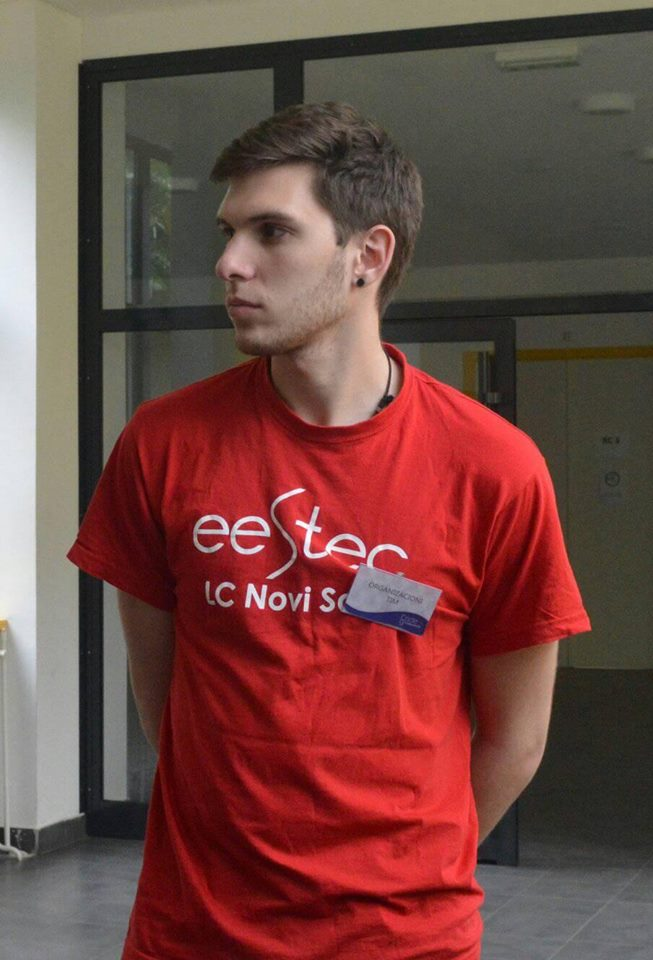

Kandidatura za potpredsednika za IT
O meni
- Zavrsio Pozarevacku gimnaziju, drustveno jezicki smer
- Student trece godine Primenjenog softverskog inzenjerstva (prvi put)
- Clan isteka od oktobra 2015

Angazovanje u Isteku
Angazovanje na lokalnom nivou
- Prvi projekat u Isteku: Soft Skills Academy 2016 kao logisticar
- Koodrinator za logistiku na Soft Skills Academy 2016 Part II
- Clan HR tima 2016. godine
- Clan PR tima 2016. godine, vodio EESTEC LC Novi Sad Twitter nalog
Angazovanje na lokalnom nivou
- Koordinator za IT na radionici "Shape of Data"
- Koordinator za logistiku na razmeni "Rubin Rangers"
- Clan raznih timova na KONTEH-u, 5 dana na Javi,
EESTech Challenge, Code 9, Soft Skills Academy 2017, Regrutacije
Angazovanje na
internacionalnom nivou
- Clan IT Tima, Knowledge & Education podtim
- Clan Internal PR tima
- Clan Magazin tima
- Aktivno ucestvovanje na skupstini Kongresa u Krakovu
Planovi za IT
- Nova Istek LK Novi Sad stranica
- Formiranje lokalnog IT Tima
- Sredjivanje KONTEH baze podataka
- Intenzivni IT treninzi
IT tim
- Sastavljen od nekolicine individua razlicitih nivoa znanja
- Edukacija narednih generacija o IT vestinama potrebnih Isteku
- Resavanje dodatnih IT potreba isteka
- Radice na SSA, KONTEH i Code9 stranicama ukoliko za to bude potrebe
IT treninzi
- Upoznavanje sa osnovnim konceptima programiranja
- Koriscenje alatki koje olaksavaju zivot programera
- Programski obrasci
- HTML, CSS, Javascript
- MeetUp-ovi
O Isteku
- Optimizacija rada skupstine
- Optimizacija rada udruzenja uvodjenjem novih nacina komunikacije i organizacije prilikom rada na projektima
- Davanje sire autonomije timovima
- Podizanje svesti o internacionali
- Pospesivanje proaktivnosti clanova